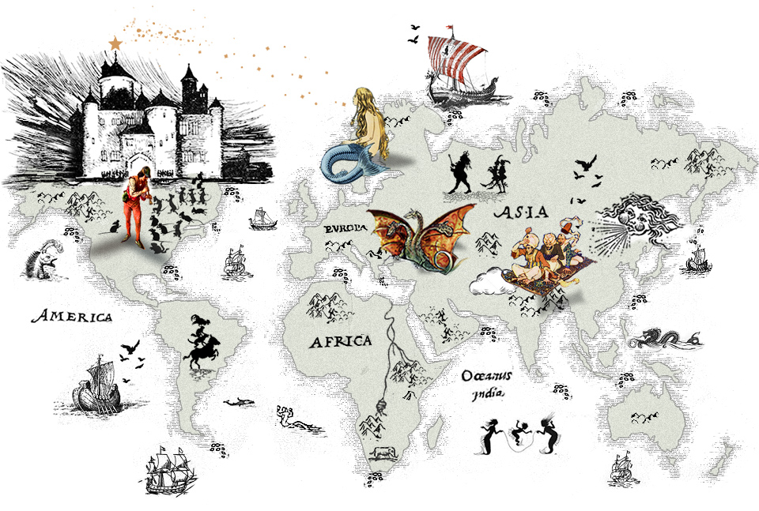
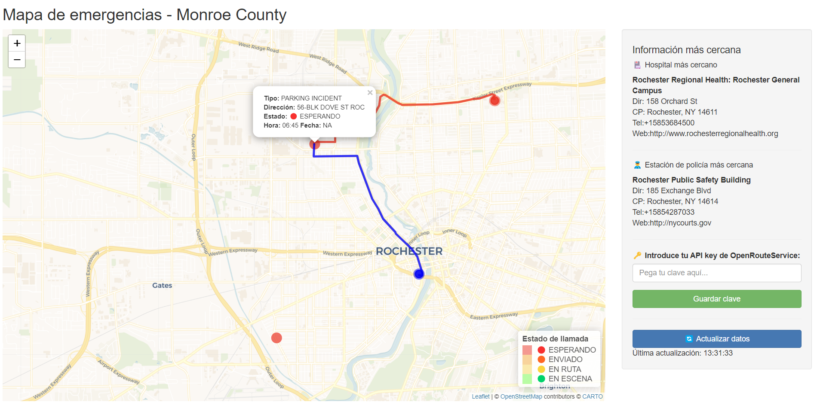

RStudio
Topic Modeling
Este trabajo analiza la relación entre el discurso político de los principales partidos españoles y las prioridades expresadas por la ciudadanía a través de técnicas de Topic Modeling. 🗳️

RStudio
Topic Modeling
Este trabajo identifica patrones temáticos universales entre los cuentos populares de todo el mundo, evaluando si ciertos tópicos aparecen de manera consistente en diferentes regiones. 🐉
RStudio
Análisis de Sentimientos
Este trabajo se centra en analizar la relación entre las emociones expresadas en las letras de canciones y sus características musicales, con el objetivo de entender cómo ciertos elementos musicales pueden influir en la percepción emocional de los oyentes. 🎶

RStudio
Web Scrapping
App Shiny
Se desarrolla una aplicación interactiva que permite visualizar en un mapa la ubicación de cada incidencia registrada por las llamadas al 911 en Monroe County, NY, en tiempo real y junto con la ruta al hospital y comisaría de policía más cercanos. 🚑
RStudio
Limpieza de Datos
En este trabajo se desarrolla un flujo completo para limpiar y preparar la encuesta ATUS, con el objetivo de analizar de manera integrada las dimensiones de actividad, sexo, edad y estado. ⌚
RStudio
Análisis Espacial
Este trabajo analiza a nivel estatal el impacto de la cultura de armas en Estados Unidos, utilizando como proxis la tasa de posesión de armas y la afiliación política del partido gobernante en cada estado. 🔫